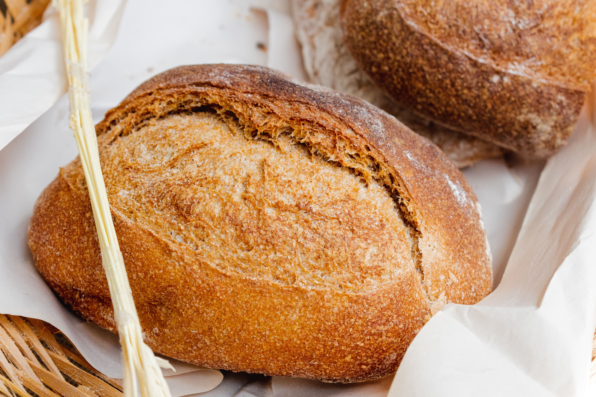

4
A Stockholm Levain, really fluffy and a good every day bread.

2
A fluffy sourdough bread perfect to toast for the weekend.

1.50
A loaf with rye flour and saisins, a good morning bread.

3
Sourdough loafs with nuts and seeds to enjoy with friends.